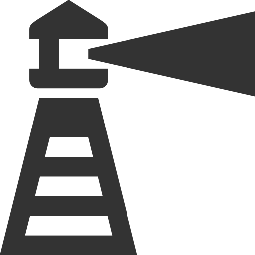

What is Lighthouse?
Lighthouse is a Google Chrome browser extension. It is designed to augment the functionality provided by Beacon. It streamlines some common workflows, such as closing a job or tasking a job to a team, or sending a message. Lighthouse also provides customised displays for use on large screens in an Operations Room.
Lighthouse is designed, written and supported by voulenteers of the NSW SES. All its features are driven by feedback from beacon users from all areas of emergency management.
What do I need to use it?
- Google Chrome Browser - Lighthouse only works with Chrome
- NSW SES Beacon Account - Lighthouse only works if you have beacon access
Lighthouse will only work on a Windows, Mac or Linux PC. Chrome on mobile devices like ipads or android phones does not currently support extensions. This is Chromes limitation not ours.
How does it work?
Lighthouse is completely client-side (runs on your computer). It stores no user data and runs completely within the Chrome web browser. It is bound by existing Beacon management systems, such as user permissions, security checks and logging of actions within Beacon for auditing purposes.
Lighthouse simply interfaces with the same information and functionality as normal Beacon, just in a different (and hopefully more effective and efficient) way.
Usage
A ready to use version of the Lighthouse extension is available through the Google Chrome Store.
This version is rigorously tested and suitable for use on operational computers. It is not updated as quickly as the Developement version but should be more reliable and stable.
A developer preview version of the Lighthouse system is available through the Google Chrome Store.
This version is updated regularly when minor changes are released, and/or there is something in the pipeline that we want to test on a wider audience.
Features & Changes

Look for this logo. It indicates a lighthouse added feature.
Jobs & Teams:
- Asbestos Register - Automatic searching of the Fairtrade Asbestos register.
- Address history - Display other jobs with same or similar address.
- Quick task - Click to show all active teams and click to task without leaving the page. Includes a quick filter to search the teams list.
- Map overlays - Prevent theft of the mouse when scrolling past the map.
- Team notes - Clearer display of completion notes and click to hide team notes
- Quick text - Clickable presets for common job actions and events on team & job sellection.
- Fixed message line breaks - Instead of showing
<br>an actual line break is inserted into the message correctly. - Page titles - Changes page title to job number when viewing a job.
- Page titles - Change page title to team name when viewing a team.
- Job search - searching for a job by number will take you straight to the job
Messaging:
- Prefill - Automatically selects users home head quarters on the "Send Message" screen.
- Team Messages - Displays active teams at the selected location and click to send a beacon message.
- Message collections - Save a group of recipients for quick messaging later.
Dashboards:
- Job summary screen - A live dashboard to display Job numbers and status.
- Job statistics page - A live and interactive dashboard for job statistics.
- Team summary screen - A live dashboard showing team numbers, team members, tasking and last updates.
Tested:
- Quick Filters - Allows for fast access to complex filter groups on the job and team registers. eg, "All Outstanding Jobs" selects all the job tags that mean a job is outstanding (New, Ack, Tasked, Refered).
- NITC exports - Export NITC events to CSV.
- Extra time options - Time picker options of 'this year' and 'all time' added.
- Advanced job export - Export jobs to CSV with lots of selectable options.
- Pagination - Allows you to select a bigger result number to tasking and job list.
How can I help develop Lighthouse?
We are always looking for help with coding (Javascript, HTML and CSS), Graphic design, Documentation writing, and feature testing. If you are interestest in helping please reach out to us and we will gladly show you how
All the Lighthouse code is hosted in github and available for anyone to download and develop
Visit The Github Repo to download the source code
Install:
- NodeJS and npm
- Gulp (
npm install -g gulp-cli)
Build:
Run npm install in the root of this repository. You then should be able to run gulp. The extension will be built into build and bundled into dist. Load the build directory as an unpacked Chrome extension and then execute gulp watch while developing to have gulp automatically rebuild JS/JSX as you edit the files.
Pull requests are welcome!